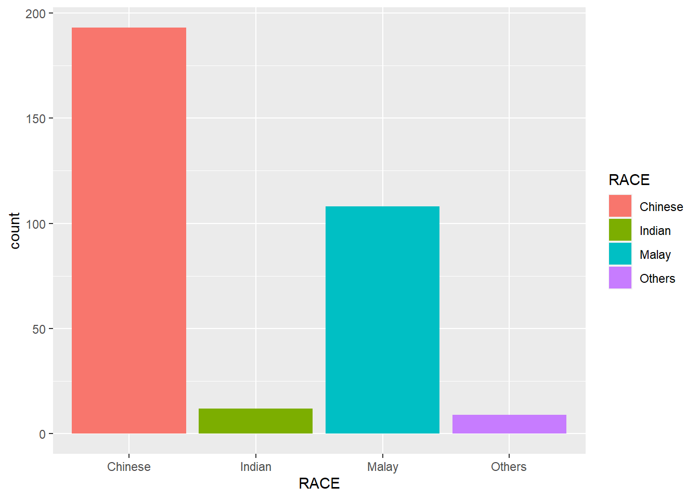
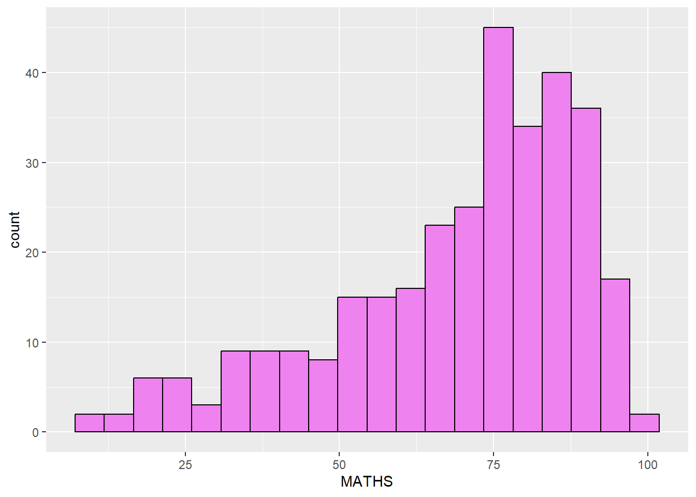

Click to show/hide the code
pacman::p_load(tidyverse)The code chunk below uses p_load() of the pacman package to check if the tidyverse packages are installed on the computer. If they are, they will then be loaded into the R environment.
pacman::p_load(tidyverse)To import the data “Exam_data.csv” into the R environment, read_csv() of the readr package is used, as seen in the code chunk below.
exam_data <- read_csv("data/Exam_data.csv")Rows: 322 Columns: 7
── Column specification ────────────────────────────────────────────────────────
Delimiter: ","
chr (4): ID, CLASS, GENDER, RACE
dbl (3): ENGLISH, MATHS, SCIENCE
ℹ Use `spec()` to retrieve the full column specification for this data.
ℹ Specify the column types or set `show_col_types = FALSE` to quiet this message.ggplot(data = exam_data,
aes(x = RACE)) +
geom_bar()
ggplot(data = exam_data, aes(x = MATHS)) +
geom_dotplot(binwidth = 2.5, dotsize = 0.5) +
scale_y_continuous(NULL, breaks = NULL)
scale_y_continuous is used to remove the y-axis.ggplot(data = exam_data, aes(x = MATHS)) +
geom_histogram()`stat_bin()` using `bins = 30`. Pick better value with `binwidth`.
geom()In the code chunk below:
bins argument is used to change the number of bins to 20
color argument is used to change the outline color of the histogram to black
fill argument is used to change the fill color of the histogram to violet
ggplot(data = exam_data, aes(x = MATHS)) +
geom_histogram(bins = 20, color = "black", fill = "violet")
aes()The code chunk below changes the fill color of the histogram using the subgroup of aes(), which in this case, is the gender of the students.
ggplot(data = exam_data, aes(x = MATHS, fill = GENDER)) +
geom_histogram(bins = 20, color = "grey30")
ggplot(data = exam_data, aes(x = MATHS)) +
geom_density()